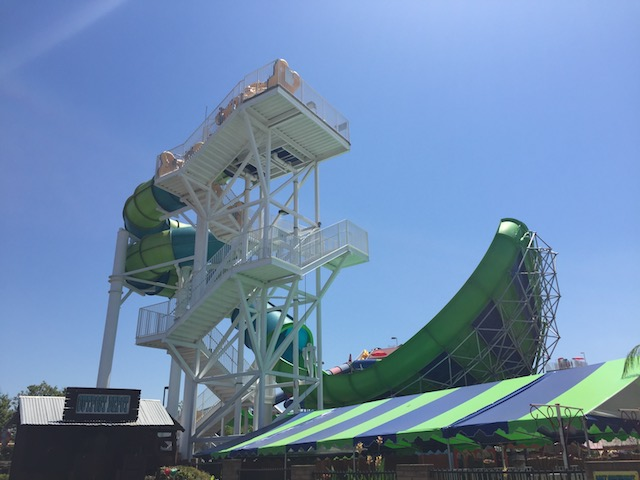

| |
Riptide Photos

We're here at SunSplash, where we'll be reveiwing their newest waterslide. Riptide. This is one of those Proslide Wave Slides. I guess you could say it's kind of like a mix between a Half Pipe and a Tantrum. That's the best way of putting it. And yeah. It's a lot of fun. You're going to have to carry one of those obnoxiously big clover leaf rafts all the way up the stairs, but hey. It's OK. This ride is a lot of fun. We eventually reach the top, hop in the raft, and away we go. We head around a sort of helix. It's dark in there. And we're gaining speed. Not a ton of speed. But just enough where you know sh*ts about to go down soon. And yeah. It soon does. We soon head down a drop. And that gives us a good gut stomach feeling. WEE!!! We then hit the wall. It's sort of like a tornado. Except you go a little higher here. But while a Tornado has the typical back and forth, on a Wave slide, you go up high, you fall down, and then you go on your merry way like nothing ever happened. It's pretty cool in that way. Oh, and there's this one little curve that really gets your raft some laterals and is a ton of fun. We then head around another turn, though with not nearly as much laterals as we used all those up and got some good splashes in. We pop into a downward hill, WEE!!! SPLASH!!! So yeah. These Proslide Waves are a ton of fun. A good little bit of tornado, but without making that the entire focus of the slide. You can just go through the wave, get your wall action, and move on. Definetly worth a ride when at Sunsplash.
7/10
Location: Golfland Sunsplash (Roseville)
Opened: 2015
Built by: ProSlide
Last Ridden: June 22, 2017
Riptide Photos

Home
|